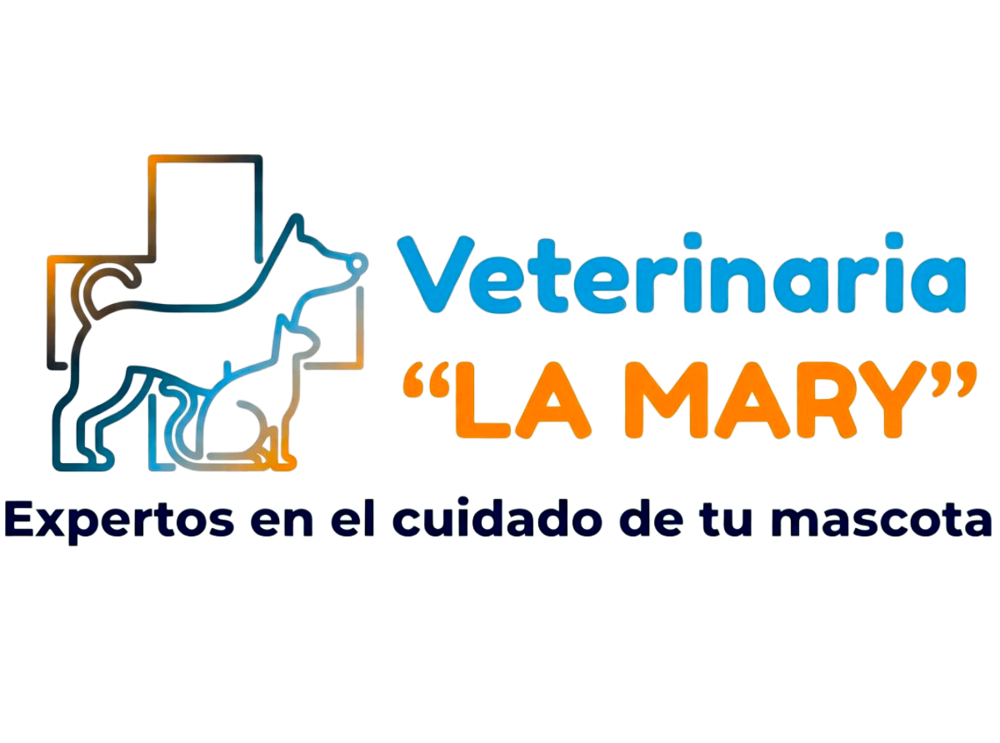
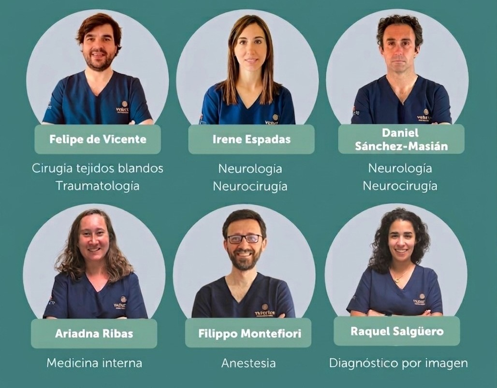

Misión
Ofrecer servicios veterinarios de excelencia con calidez humana, enfocados en la prevención y el bienestar general de las mascotas.

En Veterinaria La Mary nos dedicamos a brindar atención médica integral para tus mascotas con un enfoque humano y altamente profesional.
Contamos con años de experiencia en la atención veterinaria, priorizando siempre la salud, el bienestar y el amor hacia cada uno de nuestros pacientes.

Ofrecer servicios veterinarios de excelencia con calidez humana, enfocados en la prevención y el bienestar general de las mascotas.
Ser la clínica veterinaria referente en la comunidad, destacada por la constante innovación tecnológica y la calidad de nuestra atención.
Compromiso, ética médica, responsabilidad, empatía y amor constante por los animales.
Espacios cómodos y diseñados para reducir el estrés de tus mascotas durante la consulta.


Equipamiento moderno para intervenciones quirúrgicas de diversa complejidad.
Espacio preparado para la atención rápida y oportuna ante emergencias médicas.